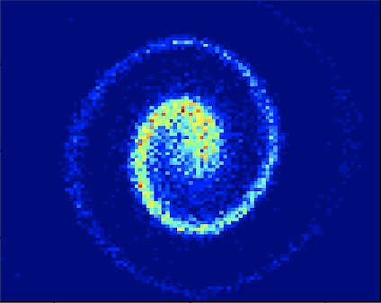
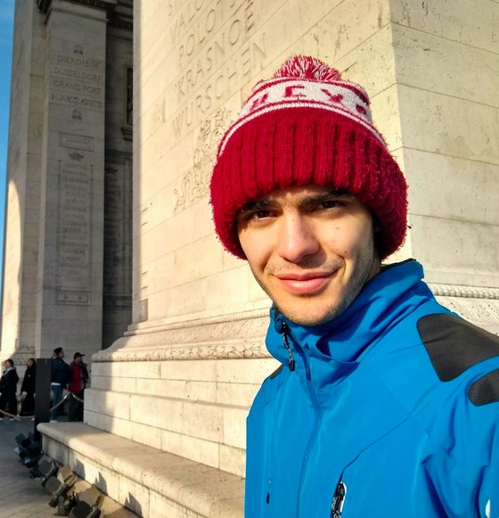
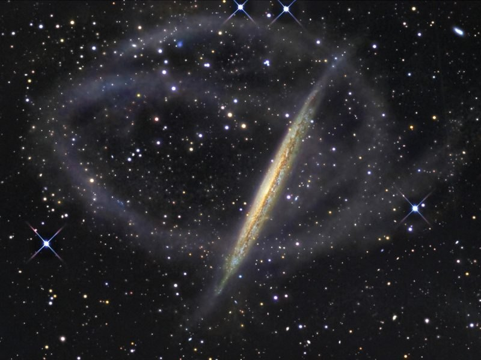
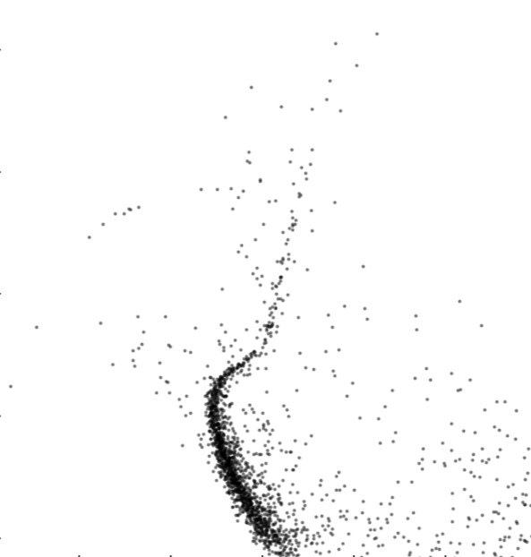
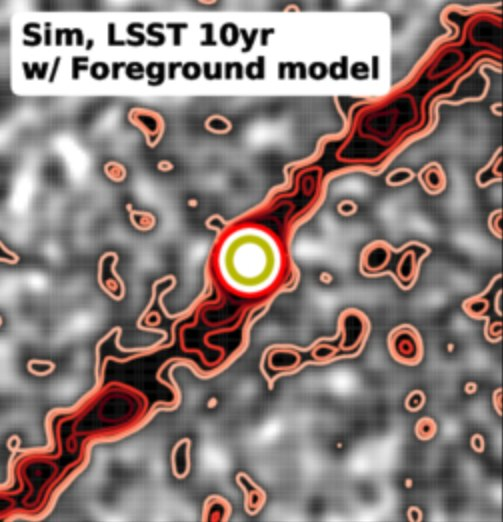
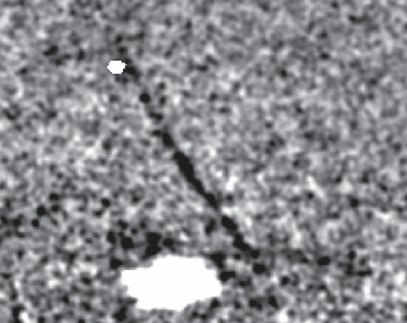
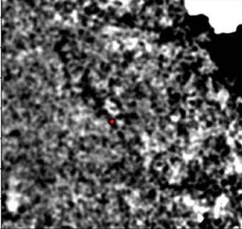
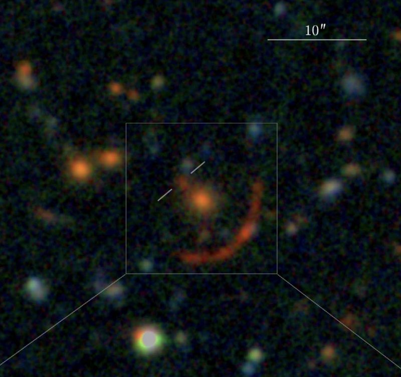

Phase-Space Spirals in the Disk
My main current focus: the "snails" in the Galactic disk, one of its clearest signatures of disequilibrium, studied across multiple projections.
Read more →
PhD Student, Department of Astronomy, Columbia University
I study near-field cosmology, Galactic dynamics in the disk and the halo, and the nature of dark matter, with a focus on stellar streams and phase-space spirals in the Milky Way.
If we share similar interests, I'd be happy to talk with you, your group, or your institution about these topics.
Dark matter, Galactic structure, and the interplay between observation and theory.
I am interested in discovering the nature of dark matter. Most of my research uses near-field cosmology and Galactic structure, which can offer insights into dark matter subhalos. In particular, I study what stellar streams, elongated arcs of stars stretching tens of degrees across the sky, can tell us about the sizes and structure of these subhalos.
That work led me to dynamics and disequilibria in the nearby universe: phase-space spirals in the disk, warps in the outer halo, and the reflex motion of the Milky Way caused by the LMC.
More generally, I want to work at the nexus of observational and theoretical astrophysics, where I believe the most important breakthroughs in the field can be made.

A selection of current and past projects. See all projects in detail.

My main current focus: the "snails" in the Galactic disk, one of its clearest signatures of disequilibrium, studied across multiple projections.
Read more →
A flexible density model of GD-1 in Gaia DR3 that constrains stream members and the perturber behind the stream's spur.
Read more →
Searching globular clusters in the DELVE data for extratidal features, and testing what LSST will be able to detect.
Read more →
My first first-author paper: a detailed characterization of the Phoenix stream in Dark Energy Survey data.
Read more →
The discovery of extended tidal tails around the globular cluster Palomar 13.
Read more →
Part of the founding class of the COOL-LAMPS collaboration, which discovered the brightest z ~ 5 galaxy known.
Read more →Outreach, access to science, and a few other things about me.
I founded and co-organize this program at Columbia. Each semester I recruit volunteers from across Columbia's STEM departments to give outreach lectures to incarcerated students at MDC Brooklyn, on topics including astronomy, neuroscience, climate science and artificial intelligence.
I'm involved with Columbia's astronomy outreach team, and I think a lot about how to ease the transition from classes to research for undergraduates considering a career in astronomy.
I am of French and Iranian heritage. I spent most summers growing up in France, where I still have family, and speak French fluently. I used to speak Farsi, and I have not yet been to Iran.
I like playing and watching many sports. I played soccer throughout my childhood and ran cross country for the University of Chicago track and field team all through college.
My most recent CV, and the best ways to reach me.
Department of Astronomy, Columbia University, New York, NY
k.tavangar@columbia.edu